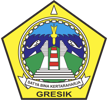

Menteri Pertanian Republik Indonesia Amran Sulaiman meresmikan
beroperasinya Taman Teknologi Pertanian (TTP) Plus

Wujudkan bangsa yang berkarakter dan
bermartabat
Melalui gerakan pramuka
Explore Gresik
Kabupaten Gresik terletak di sebelah Barat Laut dari Ibukota
Propinvi Jawa Timur (Surabaya) dengan luas 1.191,25 kilometer
persegi dengan panjang pantai 140 kilometer. Secara geografis,
wilayah Kabupaten gresik terletak antara 112o – 113o Bujur Timur
dan 7o-8o Lintang selatan. Wilayahnya merupakan dataran rendah
dengan ketinggian 2-12 meter diatas permukaan air laut kecuali
Kecamatan Panceng yang mempunyai ketinggian 25 meter diatas
permukaan air laut. Secara administrasi pemerintahan, wilayah
Kabupaten Gresik terdiri dari 18 kecamatan, 330 desa dan 26
kelurahan.
Berita Terbaru
Pelantikan Andhy Hendro Wijaya sebagai Sekda Gresik diiringi
Sholawat Burdah
Pelantikan Andhy Hendro Wijaya sebagai Sekda Gresik diiringi
Sholawat Burdah
Pantau dan ikuti berita terbaru seputar kegiatan pemerintahan
Kabupaten Gresik
Event
13
Nopember
2018
Peninjauan Pembangunan Embong Sukodono yang akan
diresmikan oleh Presiden RI
09.30 WIB
Gedung Putri Mijil Kabupaten Gresik (Materi), Halaman
Gejos (Praktek Lapangan) dan Lapangan Tenis Giri Krida
Gresik (Praktek Lapangan).
13
Nopember
2018
Peninjauan Pembangunan Embong Sukodono yang akan
diresmikan oleh Presiden RI
09.30 WIB
Gedung Putri Mijil Kabupaten Gresik (Materi), Halaman
Gejos (Praktek Lapangan) dan Lapangan Tenis Giri Krida
Gresik (Praktek Lapangan).
13
Nopember
2018
Peninjauan Pembangunan Embong Sukodono yang akan
diresmikan oleh Presiden RI
09.30 WIB
Gedung Putri Mijil Kabupaten Gresik (Materi), Halaman
Gejos (Praktek Lapangan) dan Lapangan Tenis Giri Krida
Gresik (Praktek Lapangan).